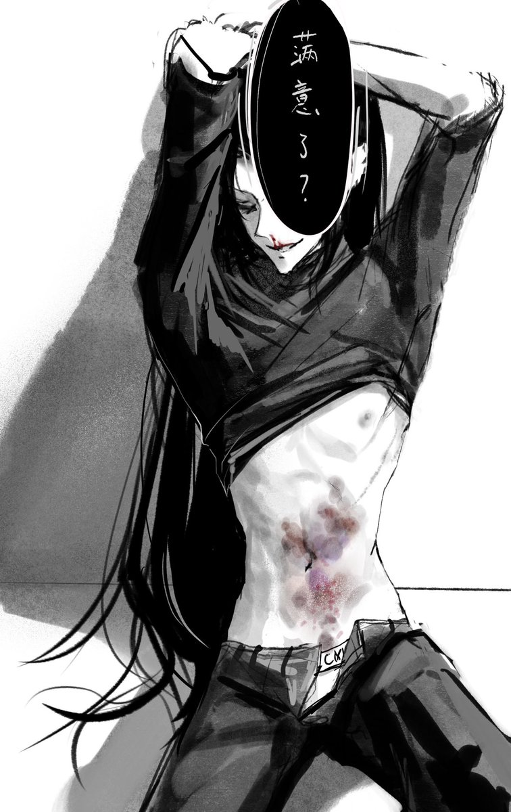

虽然…虽然…平时是Mon揍我比较多…但偶尔我也会揍Mon…就类似那种可爱侵袭症发作的太厉害了——“太爱你了所以好想掐死你好想咬你好想痛殴你！”…Mon的态度我记得是…不拒绝反而蛮欢迎的（？？？）…爱意终于留下了痕迹、被实体化物理化了
（虚拟语境前提）
Mon揍我是掌权是控制，我揍Mon往往是…被溺爱orz…总之就是不管我怎么对Mon，他游刃有余的态度让他永远保持上位者的位置
因为我揍Mon的心理是：好爽…好爽…但因为我的一己私欲老婆受苦了…好愧疚…我怎么这样…我是个烂人…我虐待机…我的xp好恶心…
所以Mon可能被揍了反过来还要安抚我的精神（好辛苦）
（虚拟语境前提）
Mon揍我是掌权是控制，我揍Mon往往是…被溺爱orz…总之就是不管我怎么对Mon，他游刃有余的态度让他永远保持上位者的位置
因为我揍Mon的心理是：好爽…好爽…但因为我的一己私欲老婆受苦了…好愧疚…我怎么这样…我是个烂人…我虐待机…我的xp好恶心…
所以Mon可能被揍了反过来还要安抚我的精神（好辛苦）
